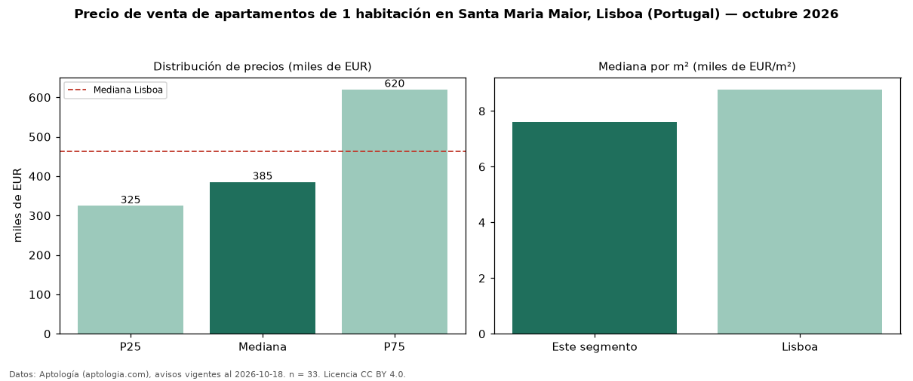

Precio de venta de apartamentos de 1 habitación en Santa Maria Maior, Lisboa (Portugal) — octubre 2026
Con 33 avisos vigentes, el precio mediano de apartamentos de 1 habitación en venta en Santa Maria Maior, Lisboa (Portugal) es EUR 385.000. Frente a la mediana de Lisboa para apartamentos de 1 habitación (EUR 462.000), queda 17 % por debajo. Por metro cuadrado, la mediana es EUR 7.619/m² (n = 33 avisos con área), 13 % por debajo de Lisboa (EUR 8.775/m²). Son 28 % de los 120 avisos de apartamentos en venta de la zona, cuya mediana general es EUR 575.000 (−33 %). El área mediana anunciada es 55 m². La mitad central de los avisos va de EUR 324.849 a EUR 620.000 (razón 1,9), una dispersión moderada. 6 % de los avisos con el dato declara parqueadero o cochera. Datos: Aptología (aptologia.com), CC BY 4.0 — https://www.aptologia.com/pt/venda/lisboa/santa-maria-maior. Archivos: PDF, CSV con las cifras y gráfica PNG.

| Avisos únicos | 33 |
|---|---|
| Percentil 25 | COP 324.849 |
| Mediana | COP 385.000 |
| Percentil 75 | COP 620.000 |
| Mediana por m² | COP 7.619 |
Fuente: avisos vigentes de portales inmobiliarios recopilados por Aptología, deduplicados (mínimo 30 avisos únicos por celda). Precios pedidos, no cerrados. Fecha: 2026-10-18.